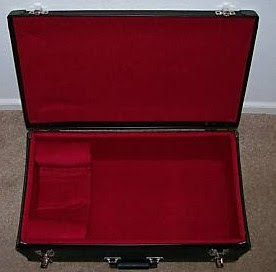

Case availability?
9/9/2010
{kind=link}

Question: Is there any truth to rumor that you might stop making these cases?
* * * * *
Answer: To tell the truth, I had no intention of selling ventriloquist carrying cases as part of my retirement. Even I sometimes wonder just how long I will keep the cases in production. They are custom handcrafted for me and I have to purchase in quantity to get the best price. I do all the lining and padding myself. I stopped carrying them in 2006 when I "retired". Then after a couple years I started getting requests for more and really had no place to refer people for anything of similar quality and value at similar price. So I decided to do a temporary production revival....and here I am today, still producing cases in that "temporary" phase. Ha. You will find the sizes and prices here: http://maherstudios.blogspot.com/ Just scroll down until you see the Custom Carrying Cases.
Note: In this photo there are no cords to hold the lid upright when in the open position. However, I DO now install such cords on ALL cases.